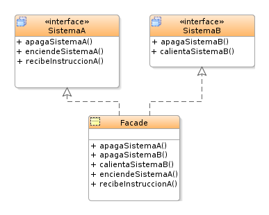

El volumen Entornos de Desarrollo de la editorial Ra-Ma ofrece un claro ejemplo de una clase que utiliza este patrón de desarrollo. Es el siguiente:
public class Fachada{
private Memoria mem= new Memoria();
private DiscoDuro dd = new DiscoDuro();
private Procesador cpu = new Procesador();
public void abrirArchivo (String archivo){
mem.cargar(dd.getDireccion(archivo));
cpu.asignarProceso(mem.get.PosUltimaCarga()); } }
public class Memoria{
public Memoria(){}
public void cargar (String direccion){
/* ...*/}
public MemPos getPosUltimaCarga(){ /* ...*/} }
public class DiscoDuro{
public DiscoDuro(){}
public void getDireccion() {/* ... */} }
public class Procesador{
public Procesador(){}
public void asignarProceso(MemPos posicion){ /* ... */} }
Como se puede observar en este ejemplo, se combinan y metodizan las diferentes rutinas que se tienen que hacer para llevar a cabo una operación concreta. Así, se agrupan las diferentes operaciones para simplificarlas y solo necesitar de una llamada para realizar un cúmulo de acciones que conllevan la operación que se neecsitan.
Gracias a haber utilizado el patrón de diseño Fachada, si se desea abrir un archivo no se necesita instanciar las tres clases y realizar las llamadas para abrir el archivo; solo habrá que invocar al método abrirArchivo de la clase Fachada.
En la siguiente imagen se puede observar un ejemplo gráfico muy sencillo dee ste patrón de diseño.
